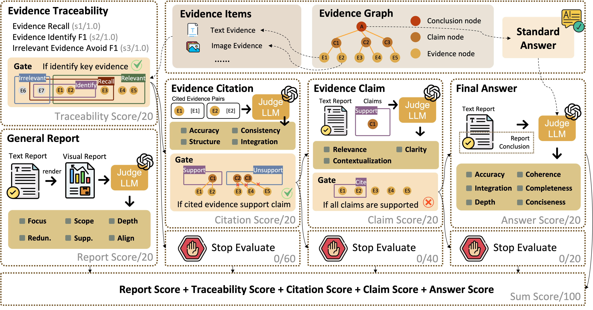
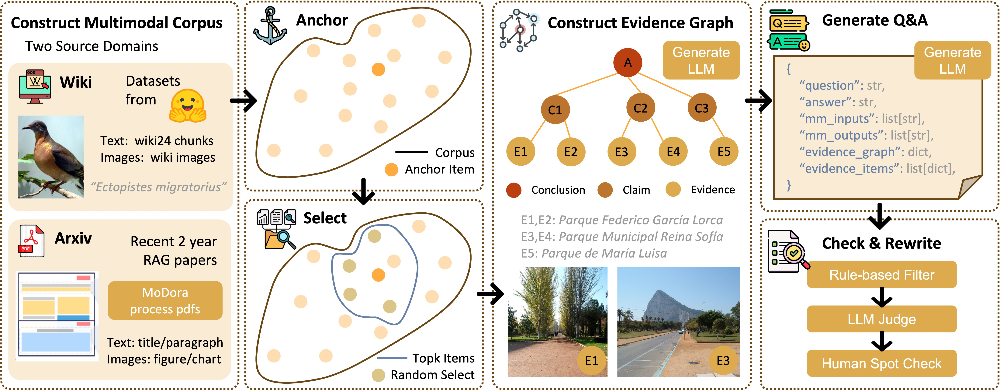

Deep research requires models to retrieve, connect, and synthesize evidence from large-scale heterogeneous sources to answer complex queries and produce analytical reports. Existing benchmarks mainly evaluate final outcomes, such as answer correctness, report quality, or citation alignment, while providing limited visibility into whether evidence is correctly selected, linked, and aggregated into supported claims and conclusions.
To address this gap, we introduce HiEviDR-Bench, a benchmark for evaluating Hierarchical Evidence aggregation in Deep Research. HiEviDR-Bench covers open-domain and academic-domain settings under both text-only and multimodal conditions, and represents each instance with an explicit evidence graph that captures evidence selection, cross-source linking, and aggregation from evidence to intermediate claims and final conclusions. Based on this formulation, we develop a traceability-oriented evaluation framework with five dimensions—report quality, evidence traceability, citation accuracy, claim verification, and answer correctness—together with a progressive gating mechanism for fine-grained error localization.
HiEviDR-Bench contains 3,407 questions with evidence graphs across multiple difficulty levels. Experiments on 12 representative multimodal large language models show that, although many systems achieve strong report quality, their performance drops markedly on citation accuracy, claim construction, and answer correctness. Further analysis shows that the main bottlenecks lie in evidence identification and intermediate claim construction, revealing that the core limitation of current deep research systems lies in evidence composition and claim-level reasoning rather than report fluency alone.
Each question is paired with heterogeneous evidence items, an evidence graph, and a standard answer, enabling five-dimensional evaluation of a generated report: Report, Traceability, Citation, Claim, and Answer. A progressive gating mechanism is applied to the last three stages to ensure faithful evidence aggregation and grounded answer generation.

We first build a multimodal corpus from two source domains, then select anchor-centered candidate evidence items to construct an evidence graph with an LLM. Based on the graph, we generate question--answer pairs and apply rule-based filtering, Judge-Model checking, and human spot checks to ensure structural validity and data quality.

This case study provides an interactive view of HiEviDR-Bench. On the left, the evidence graph explicitly organizes the reasoning process from evidence items, to intermediate claims, and finally to the conclusion. By clicking different nodes, users can inspect how each piece of evidence contributes to specific claims and how these claims are aggregated into the final answer. On the right, we show a corresponding multimodal deep research report, highlighting that HiEviDR-Bench supports both structured traceability analysis and grounded long-form report generation.